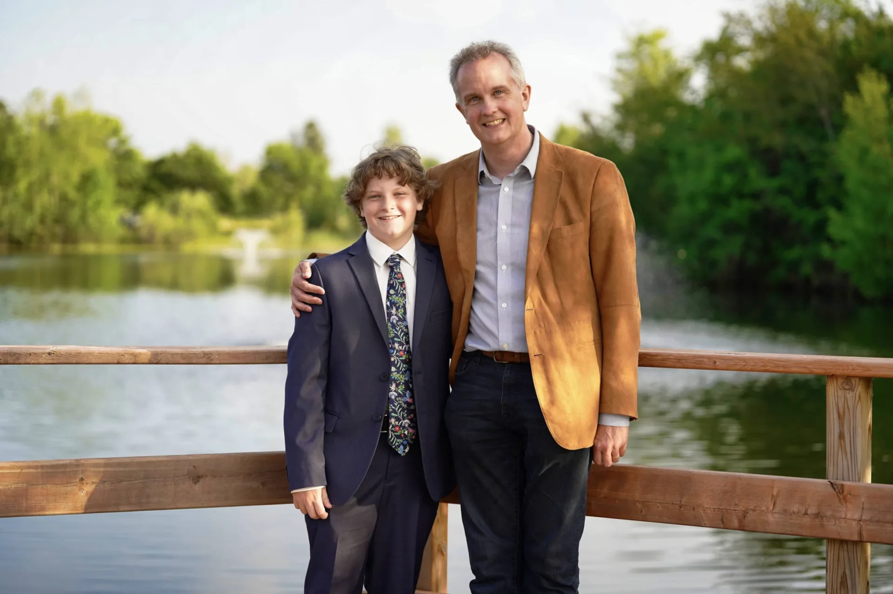

This system gives a future physician with an unusual creative
practice one coherent home. The exterior remains calm and
recognisable while photography, films, writing, objects, and
experiments retain their own identities inside it. Photography is
one continuous page. Films and Projects provide the two chooser
destinations for individual work.
01
Foundation
A small palette and two live-text families provide continuity.
Project imagery supplies most of the atmosphere, so the system
does not need decorative colour or a different font for every
body of work.
Colour
Cloud#EEF0F2
White#FFFFFF
Ink#111317
Slate#5F6670
Brand Blue#2D29F4
Vermilion#D9362B
Spacing
04
08
12
16
24
32
48
64
96
Typography
Will Chai makes things.
Funnel Sans carries the reading experience. It should feel
precise without becoming clinical and conversational without
becoming casual. Unbounded appears only when a title benefits
from its unusual silhouette. Plantagenet Cherokee belongs to
the existing logo artwork rather than to live website text.
Unbounded RegularMajor titles and short project names
Funnel Sans 400–600Prose, navigation, metadata, and controls
Plantagenet CherokeeOutlined logo artwork only; master asset required
Signature boundary
One moment, not every module.
Use the Vermilion dash for a meaningful active or
editorial region, normally no more than once per viewport.
Motion
Interface responses take 160 milliseconds and image changes
take 360 milliseconds. Photography maps ordinary vertical scroll
progress to the diagonal card sequence. Its photographic passage
and expanded image view connect the same nine photographs. Reduced
motion uses immediate state changes and a static grid.
Marks and minimum type
Compact W
This rounded blue mark is official and may appear in site
identity, metadata, favicons, and the contact ticket.
willchai.comThe official website name. The outlined Plantagenet Cherokee wordmark remains a separate production asset.
14px absolute minimum15px preferred for recurring interface text.
02
Project panels
Every homepage panel has the same exterior rhythm: 36% of the
desktop viewport height, never more than 40%, with a 4:3 mobile
form. Their identities come from the work rather than from solid
category colours.
A full-panel rendering layer bends the project image around a
restrained event horizon while every live title stays above it.
The heavy spring follows the pointer, the thin accretion trace
turns from −20° to +20°, and the other panels dim by 20%. There is
no photon ring, and the renderer sleeps when it settles. Touch gets
one short transition; reduced motion keeps the link direct.
The contact ticket already belongs to willchai.com. It gives us
a genuine piece of visual character to preserve while the wider
organic and playful language remains open for better exploration.
Pixel photographer
The approved 32 × 32 atlas supplies three clean opening poses as Will rises through the first photograph and stands on its top edge. Four dedicated pushing poses bring him back for the $600 package scene. The greeting lasts four seconds, while the pricing scene lasts five and a half seconds.
Its irregular edge, large hover scale, slow pointer-responsive
tilt, periodic jiggle, and click bounce make it feel handleable.
Spectral light follows the cursor while the repeated W layer
rotates deep beneath the face. This is the original live-site
treatment, kept specific to the ticket.
04
Patterns
Patterns solve recurring communication problems. Each one has a
content contract and permitted variation so future pages can
remain related without becoming identical.
Identity rail and portrait control
Establish the person behind the work and offer a small,
optional moment of discovery without making the biography a
résumé.
Required
Portrait, name, durable premise, primary navigation, general contact route.
May vary
Portrait crop and image sequence; short contextual line.
Must hold
Keyboard activation, visible cue, useful first image, reduced-motion support.
Will Chai
A future physician with an unusual creative practice.
Films programme
Original stills and poster artwork introduce each film. A selected image continues into its detail page, and trailer actions open a dismissible player. Phone layouts use one reading column.
Required
Exact title, year, runtime, director credit, premise, film page and trailer.
Behaviour
Motion follows a viewing choice. Reduced motion opens the destination directly.
Must hold
Reserved media dimensions, keyboard operation, playback cleanup and direct trailer links.
Photography gives visual quality priority and supports portrait
and event inquiries through comfortable browsing, practical
information, and straightforward contact. The approved direction
uses a compact identity and Contact header, a stable diagonal featured passage, and an animated Will Chai collaboration composition. An image led McMaster feature and
two compact supporting clients settle into one visible group,
a compact gallery, and an expanded image view. Native image
proportions continue across a White canvas.
Required
The compact identity and Contact header, nine approved featured photographs, the settled three client composition, the $600 pricing anchor, the shoot builder, a caption free shuffle, and the complete service footer.
May vary
Client spacing, entrance timing, and featured scroll distance may be tuned after visual review.
Must hold
Complete image proportions, stable mobile motion, all three organizations visible together, native vertical scrolling, keyboard access, and a static reduced motion grid.

Photography
Photography in motion
Nine featured photographs move from the lower right through the centre toward the upper left. McMaster leads an animated Will Chai collaboration composition, with Foxwood Homes and Platinum Moon settling beside it. The large Super Generic Package card presents $600 on the white page surface before Will pushes it aside. The white board appears underneath with Event name and two questions at a time. Its moving pointer follows the primary action, which becomes Open email on the completed inquiry.
The site keeps one frame while each form presents the evidence
people actually need to understand it. These are content rules,
not new visual themes.
Photography
Lead with a considered sequence, complete image proportions, and descriptive alternative text. Keep publication permission confirmed.
Film
Begin with a poster or deliberate still, then record year, runtime, role, credits, and whether captions or a transcript are available.
Writing
Use a title, form, and concise premise before the text. Long work needs a comfortable reading surface rather than an image of words.
Games and software
Name platform, status, and contribution, then give a clear way to experience the work. Do not imply features that are not present.
Objects
Record material, scale, process, and provenance when they change how the object is understood. Detail photographs should retain physical context.
Research
Include it when it explains the practice, with appropriate sources and collaborators. Keep it in project context or the archive, not the identity rail.
06
Voice
The website sounds like a thoughtful person describing work he
cares about. It does not perform cleverness, imitate a magazine,
or divide every idea into a slogan.
I work across photography, film, writing, games, and objects, but
the medium is usually where a project ends rather than where it
begins. I am interested in people, attention, and the details that
make a story worth sharing. This site is a changing selection of
that work and an invitation to make something together.
07
Asset register
A visible status prevents placeholders and historical files from
quietly becoming permanent brand assets during implementation.